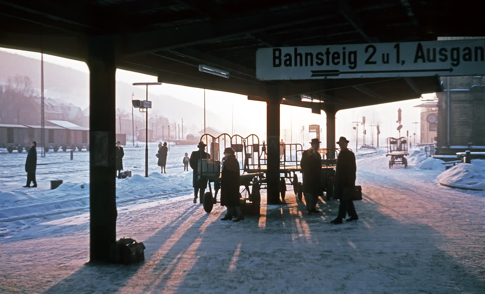
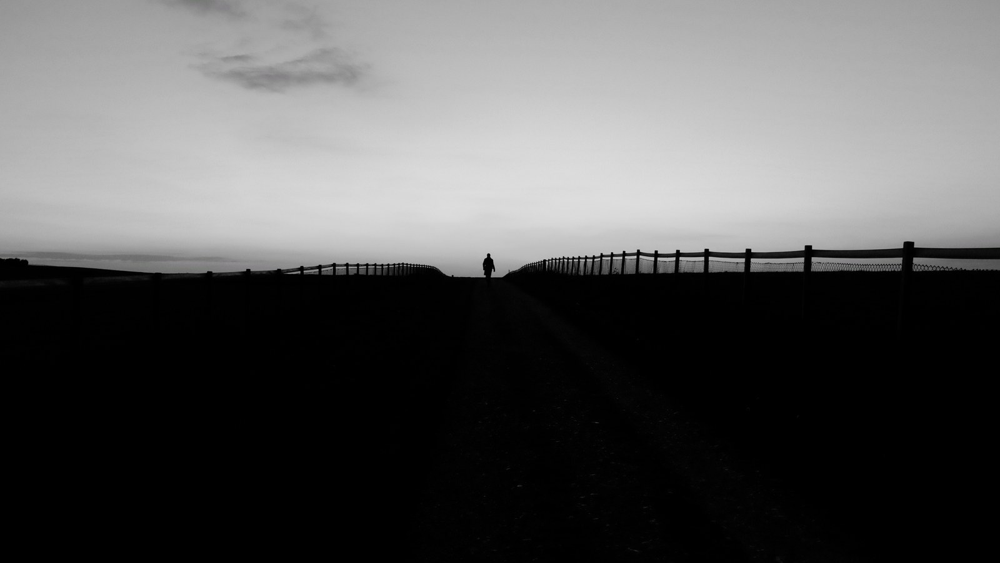
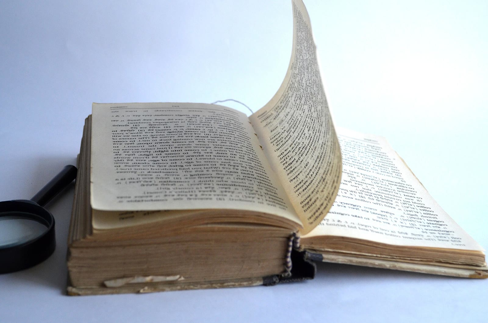
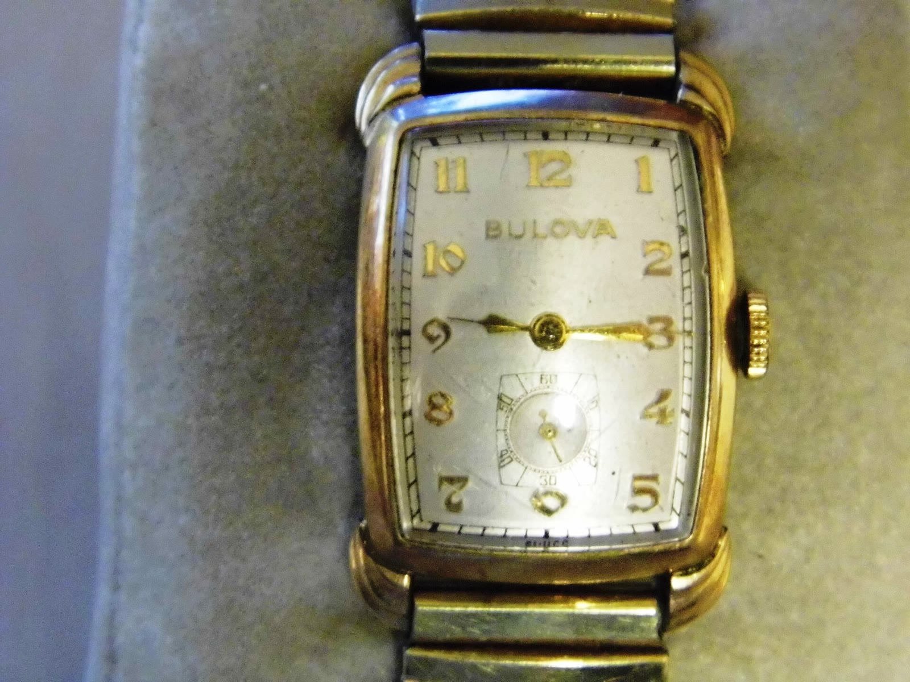
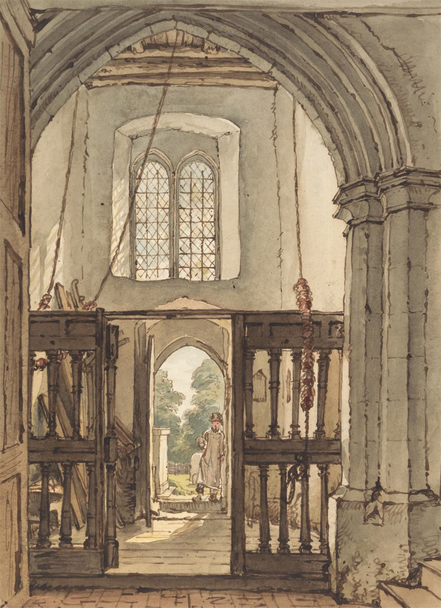

構図参照AR-ENV-01置換候補を準備
鐘のない天文台と空の鐘枠を、遠景・内部寄り・終幕回帰で再利用できる汎用セット。
素材準備
19 shots / 14 requirements / 28 references
Owner判断は未選択
初回の非公開組立てでは、架空文書・比較図・抽象図・文字要素を決定的に作成し、実在施設・人物・実記録を含む参照は置換候補へ回す。真鍮の蛾だけをOwner検討用ローカルproxy候補とし、音は将来laneに残す。
最小セット: 14 requirementsで19 shotsを覆います。例外候補は AR-PROP-02、未到達のsource確認は 8 件です。
7 classes · 1 row / requirement

構図参照鐘のない天文台と空の鐘枠を、遠景・内部寄り・終幕回帰で再利用できる汎用セット。
 構図参照
構図参照半透明仕切りを含む中立的な制度空間。評議会場・台帳の影・制度候補面へ再利用する。
 構図参照
構図参照人物を特定しない手元insert。時計修理と台帳を開く動作で共有する。
構図参照匿名の評議会構成員を示す中立的なシルエット。

構図参照トーマの複数の運命候補を保持する未確定シルエット。
構図参照時計修理台と9:17の時計面を同じ造形系で使えるモジュール。
 構図参照
構図参照静止した真鍮の蛾。手掛かり、時計面、機能候補の三用途で再利用する。
構図参照トーマが残したとされる汎用メモ。

構図参照架空の台帳、名前欄、『分』欄、未記入欄を持つ再利用可能な文書variant群。
 構図参照
構図参照仮説、運命、機能、動機、保留を同じ重みで並べる図版システム。
名前の輪郭が薄れる感覚を示す抽象モーショングラフィック。

構図参照時間と名前を同じ重みで並べ、中央を未決定のまま空ける分割図版。

構図参照字幕と短いlabelを統一する日本語firstの文字システム。font自体は未選定。
六幕それぞれの音設計位置を示すcue placeholder。音声fileや素材は含めない。
非公開の初回組立て向け
架空台帳、候補比較、抽象図、文字、匿名シルエットを同じ規則から再現できる形で準備します。
実在施設、人物、実記録に依存する環境と手元は、新規source候補または中立placeholderへ分離します。
人物、実在施設、実記録、商標、文脈誤認のriskを個別記録し、制作候補の判断前に再確認します。
証拠と判断を分離
権利判断は未実施
28件はcreator、source、license、local path、hash、取得日を保存しています。通常のreadbackではsourceページを再取得しません。
artifacts/beat2-composition-board/composition-assets/ref-b02-s01-precision-handwork.jpg42e1d3963eeab95679858889f85c4b60e348efaaa36ef4ca1c6fd103768b4a33artifacts/beat2-composition-board/composition-assets/ref-b02-s01-watch-repair-workbench.jpg207933084e53ee608c9d4f29de795ab2915f3d4cddc4612d99b1db452cf3e258artifacts/beat2-composition-board/composition-assets/ref-b02-s02-aged-handwritten-letter.jpg6b98a5fa94c40acac31e266decd75d9ae31f3b7cf5a59802bcf7408abbd7671bartifacts/beat2-composition-board/composition-assets/ref-b02-s02-metal-butterfly-brooch.jpgac4df2e88ff0834f6a6695b3fa72737d75e5dbec78a177c9056c3b8a0e3376b9artifacts/beat2-composition-board/composition-assets/ref-b02-s03-brass-clock-dial.jpgacc9849b02b769616e7218aba0d2740cabe6030ee1e7178f9d012bffa21d45a3artifacts/beat2-composition-board/composition-assets/ref-b02-s03-vintage-watch-0915.jpg80abb1498c2e38ad6f5e0c3dc4b44b0b61729b5db4e68db0ddc050c70c7a2082artifacts/beat4-composition-counterexample/composition-assets/ref-b04-s01-conference-backs.jpg79e17d1982c6d217063d34d1479606f8a586c6e4b8b001167e3647ce2d4b1962artifacts/beat4-composition-counterexample/composition-assets/ref-b04-s01-frosted-partition.jpgf55ecaa635f09cd4b203fc97775ef049f42bb3a0004a24ab1c2385438685fffbartifacts/beat4-composition-counterexample/composition-assets/ref-b04-s02-card-catalogue.jpg23aaf60edcd0880b63e5c98eed29a2ea46fddf0c5e3e8ab17c3e948cfcae5822artifacts/beat4-composition-counterexample/composition-assets/ref-b04-s02-time-recorder.jpgea2732ff8205541eed60050129020ba94c6202d868d77eca90972d6792411127artifacts/beat4-composition-counterexample/composition-assets/ref-b04-s03-closed-meeting-room.jpge6f06540dba924ccd3c5aaa38fa3f676f489335762b61dd7ecbcca69da196ca9artifacts/beat4-composition-counterexample/composition-assets/ref-b04-shared-general-ledger.jpg74d83e8fbad303bf4a08c86e72c02746c678a95e56c0f69814c6c853dd7feaabartifacts/composition-expansion-wave1/composition-assets/ref-w1-b01-s01-harvard-observatory.jpg6e1376fa2b4fa4bfffae778f1e86364b1c3baf5fe2925cd242337d76f7b33e84artifacts/composition-expansion-wave1/composition-assets/ref-w1-b01-s01-kreiensen-station.jpg49b3136c701d7e149194e74cac2a1c5c6dc688d6502340fce4915cec656da134artifacts/composition-expansion-wave1/composition-assets/ref-w1-b01-s02-beam-junction.jpg05aacc6386c240e2174bd717e90342fec23e1b5fbdf092965495109d00f81e56artifacts/composition-expansion-wave1/composition-assets/ref-w1-b01-s02-wood-joints.jpg3258615d9b6b28e22ed5d0510f74f135e78953557735d0d6d42e47d122ddf2deartifacts/composition-expansion-wave1/composition-assets/ref-w1-b01-s03-belfry-interior-art.jpg39602c0536b46c3f0868e2f4b9661c5e1bb1a4d67f70ca1fcdfecb9355c5d91bartifacts/composition-expansion-wave1/composition-assets/ref-w1-b01-s03-noon-mark.jpg1c68f99c68f85869e461a832498d6485994c94a28c04effefaf47964b1447f62artifacts/composition-expansion-wave1/composition-assets/ref-w1-b03-s01-book-in-hand.jpg6fc36da6028effe9a402f18efabeeef970e6511f4023156994aa5dcf5aad681aartifacts/composition-expansion-wave1/composition-assets/ref-w1-b03-s01-page-turning.jpgd846f48b836c604cbbf913ad7b37700926a362bc657dc7a4df8b1b204dfb9f13artifacts/composition-expansion-wave1/composition-assets/ref-w1-b03-s02-blank-book.jpg312ac0465762b21dd1d67504d7dcaee074c94f73d7281f5adeb16fed618343a4artifacts/composition-expansion-wave1/composition-assets/ref-w1-b03-s02-ledger-geometry.jpgccbb058ad17576dd5d69329b67137947a3dfcc218672394d97f1bc4234e6ff88artifacts/composition-expansion-wave1/composition-assets/ref-w1-b03-s03-ink-stains.jpg96350f03a1bc118e3108284ca43edc84a01e83f23686707f58854ffe939bc0a4artifacts/composition-expansion-wave1/composition-assets/ref-w1-b03-s03-old-paper.jpgde3156d47386e17242543e6292093ac0eeba4b6079fb735b0da51423fa9b3624artifacts/composition-expansion-wave2/reference-assets/ref-w2-b05-fate-blank-card.jpgc970d41f104ddb5a7ebcda6348cd1018dc979101329d51cb5f303c64a49ce802artifacts/composition-expansion-wave2/reference-assets/ref-w2-b05-s01-horizon-silhouette.jpg2f5cbd4befae47efb0b44a35a901221dfc101ff2b027daee1b9c92575f4492a7artifacts/composition-expansion-wave2/reference-assets/ref-w2-b05-s02-brass-plate.jpgd9d8146351e2db5b42dc7c39c4609399aa8039cfa68387722f591f833369ae39artifacts/composition-expansion-wave2/reference-assets/ref-w2-b06-s02-closed-book.jpge69f1a06db297bb537d57684cf4989615e0426eb4500c6c8cc5d7aa6bddca2ab参照は構図検討用です。制作素材の選定、公開適合性、利用判断を示しません。
{kind=link}
{kind=link}
{kind=link}
{kind=link}
.jpg){kind=link}
.jpg){kind=link}
{kind=link}
{kind=link}
{kind=link}
.jpg){kind=link}
{kind=link}
{kind=link}
{kind=link}
.jpg){kind=link}
{kind=link}
{kind=link}
{kind=link}
{kind=link}
{kind=link}
{kind=link}
.jpg){kind=link}
.jpg){kind=link}
{kind=link}